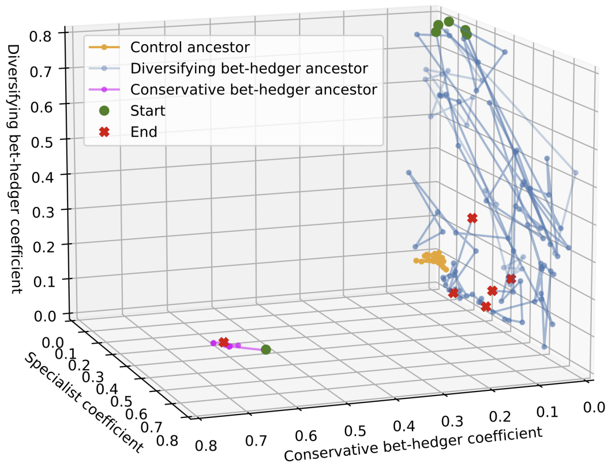
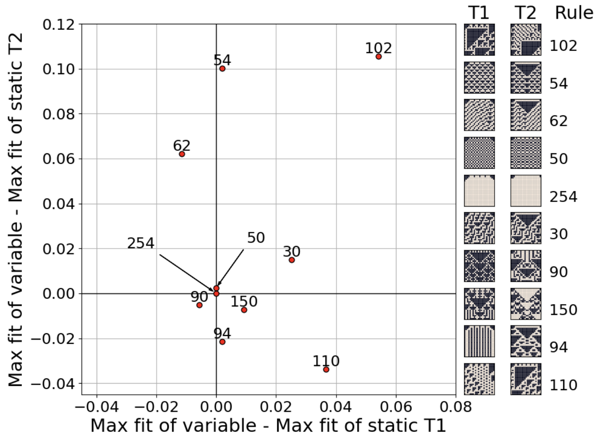
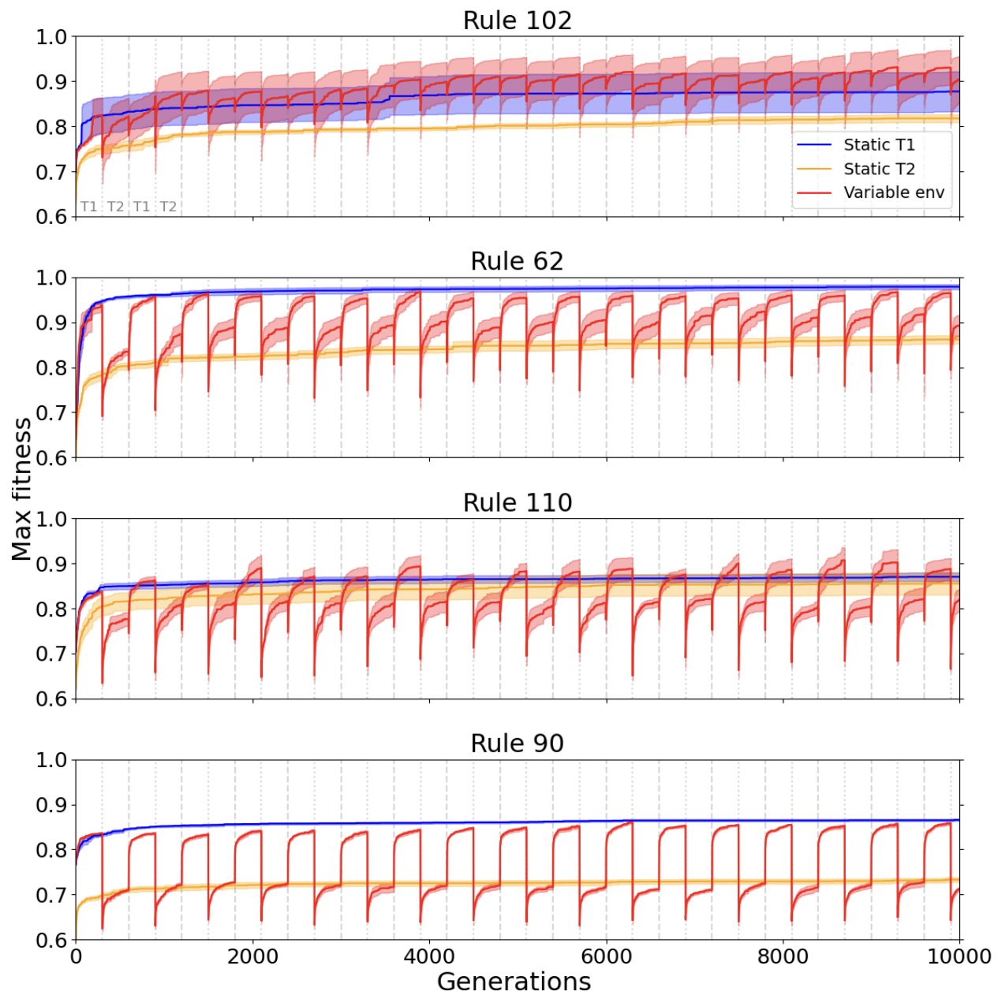
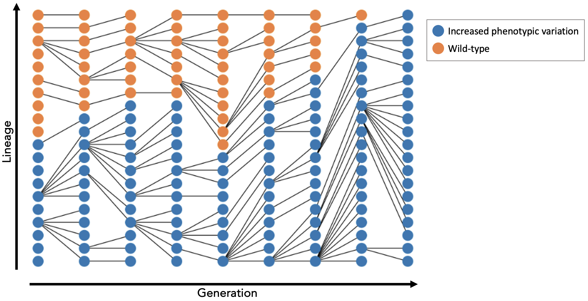
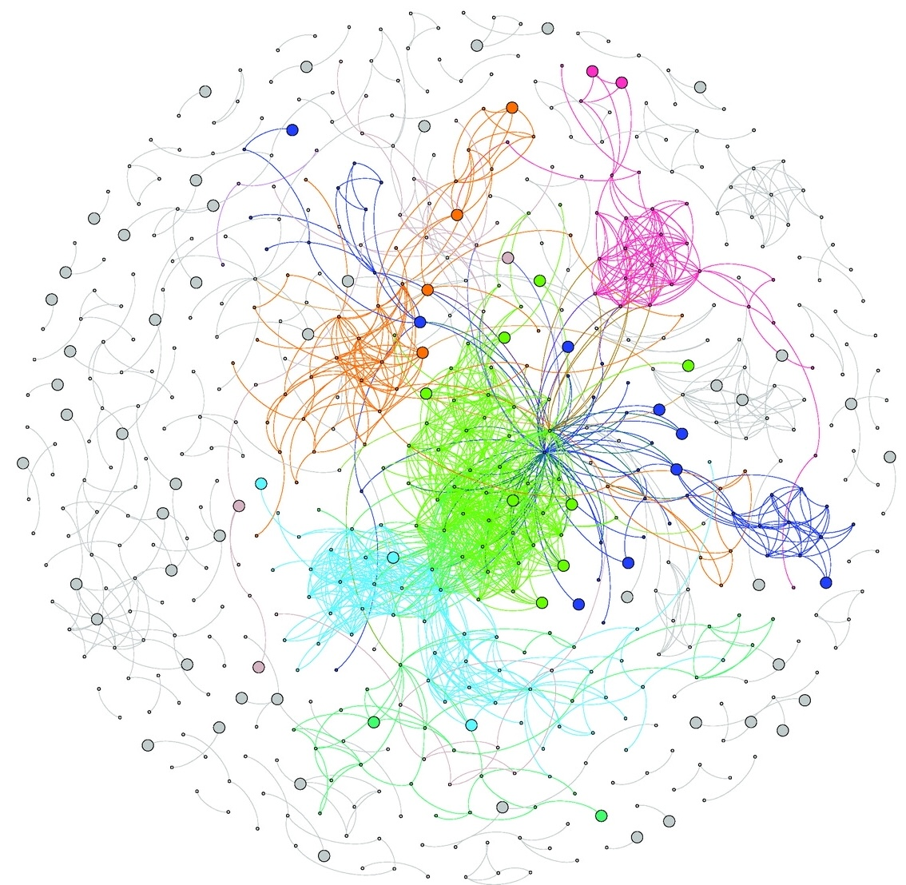

Bio
I am a finishing PhD student at the University of Vermont, USA. I am interested in artificial life, the evolution of evolvability and development.
Computational models
As part of my PhD thesis research, I have developed the following computational models:
- Simple gene regulatory networks in a variable environment first evolved such that a few mutations could result in switching between phenotypes optimal in alternative environments - diversifying bet-hedgers reduced risk by making sure at least some of their offspring would be fit regardless of an unexpected environmental change. However, we found this strategy was quickly outcompeted by a more conservative strategy that only produced offspring with a phenotype intermediate between the two alternative optimal phenotypes. We think that this was due to the properties of the genotype landscape underlying these strategies. Published peer-reviewed paper.

- Using cellular automata (CA) rules to generate a set of target developmental trajectories, we found that the effect of environmental variability depended on the specific CA rule that was used. Frequently changing the environment had a negative effect on the maximum fitness the population could reach in some cases, while in other cases, varying the environments resulted in the populations reaching higher fitness peaks. Again, these results show that evolutionary dynamics in varying environments depend on the genotype landscape. This work is in review.


- A two-loci population genetic model showed that an allele that increases phenotypic variability, that is usually considered a good strategy in a variable environment, can also be selected for in static environments under some circumstances, even if the average effect of the variation is negative, and the new phenotypic traits are not heritable. We found that increasing the selection pressure helped this allele spread, and that the population size had an interesting non-linear effect on the probability of fixation, tightly related to heritability. Manuscript in preparation.

Purple sea urchin work
- By whole-genome sequencing a 140 purple sea urchins collected from seven populations experiencing different levels of environmental variability, I generated a very useful resource to investigate the structure and genetic diversity of these marine populations, as well as to find genetic variation putatively involved local adaptation to environmental variability. Interestingly, we found that such genetic variation was mostly regulatory and found in regions predicted to have phenotypic effects with low levels of pleiotropy. Published peer-reviewed paper.

Key research interests
- Evolvability
- Evolution of development
Hobbies
Geocaching, climbing.